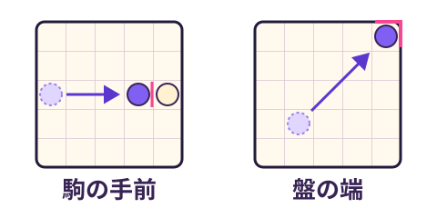
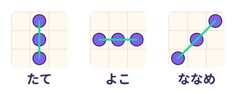

ニュートリーコのファンメイド、３手詰めチャレンジ
正解の初手が複数ある問題もあります。初手を間違えると、相手が先に３個そろえる場合があります。
あなた→相手→あなた。３手でそろえて勝とう！


この端末・このブラウザー内に保存されます（アカウントには紐づきません）。閲覧データの削除やプライベート閲覧の終了などで消えることがあります。別端末・別ブラウザーには同期されません。再プレイは通常の成績に含まれません。
この端末・ブラウザに保存されます。全国ランキングではありません。
途中の挑戦を終了して、新しい5問を始めます。
Neutreeko 公式サイト（英語）を別タブで開きます。このゲームはそのまま残ります。